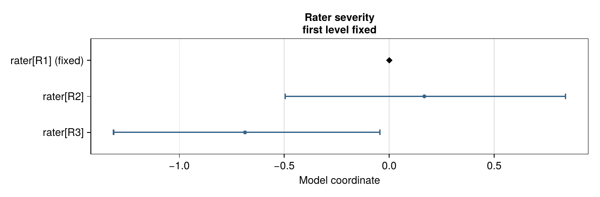
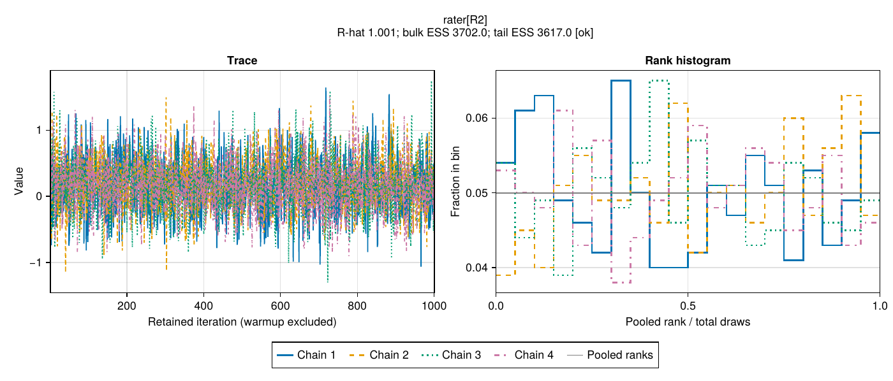
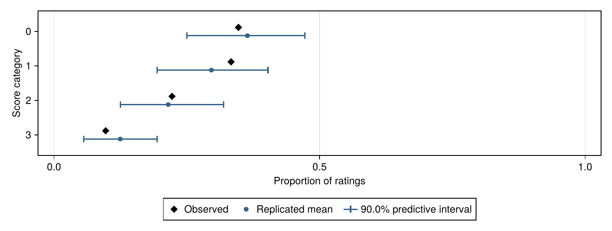

Your First Rating Analysis
Is rater R2 more severe than R1, after accounting for the people and tasks they rated? This example answers that question using supplied teaching data. You can read the figures without installing anything. To run the analysis, complete installation first, then follow the code below.
1. Understand the ratings
Each row is one person's score on one task from one rater. Here are three rows from the supplied data:
| Person | Item (task) | Rater | Score |
|---|---|---|---|
| P1 | I1 | R1 | 0 |
| P1 | I1 | R2 | 0 |
| P1 | I1 | R3 | 2 |
The complete dataset contains 72 artificial ratings: 12 people, four tasks, three raters, and ordered scores 0–3. Higher scores mean better performance. The raters have overlapping assignments, allowing their severity to be compared. These are teaching data, not evidence about real raters or a recommended sample size.
We use a one-dimensional many-facet partial-credit model. It separates person ability, task difficulty and rater severity, with category steps specific to each task. R1 defines zero severity: positive R2 means stricter than R1. Zero does not mean R1 is unbiased. The first task is also fixed at zero and category steps are centered to define the scale.
The example uses zero-centered normal priors: SD 1.5 for person coordinates and SD 1.0 for free rater, item and step coordinates. These describe uncertainty before observing the ratings; they are teaching choices, not universal defaults.
2. Run the analysis
Run this block in Julia after installation. The last line starts estimation: four NUTS chains, each with 1,000 warmup and 1,000 retained draws. To learn from the supplied result without computing, skip the block and continue to step 3.
using BayesianMGMFRM
include(joinpath(pkgdir(BayesianMGMFRM), "examples", "first_analysis.jl"))
analysis = FirstMFRMAnalysis.main()The script checks the rating design, fits the model, saves the fit and prints an answer with numerical checks. A new run can differ from the stored result shown below. To inspect the data, model and settings without fitting, use FirstMFRMAnalysis.inputs() instead of the last line.
3. Read the answer
The supplied completed analysis gives a mean R2−R1 difference of 0.166 logit and a 90% credible interval of [−0.495, 0.840].

Dots are posterior medians; bars contain the central 90% of each parameter's posterior distribution. R1's diamond is fixed at zero. The text reports a mean, so it need not equal the plotted dot. Download SVG · PDF

R2's interval extends on both sides of zero. These ratings do not clearly establish which rater is more severe under this model and prior. They do not prove equivalence. Logits are model units, not score points. For another pair of raters, estimate their contrast directly rather than compare the overlap of their separate intervals.
4. Check the computation

Colors identify the four chains. The traces and rank histograms show retained draws for R2−R1; warmup is excluded. Similar traces help, but this one-parameter figure does not replace checks of the whole fit.
In the supplied fit, all 25 estimated coordinates pass the recorded checks: maximum R-hat is 1.0026, minimum bulk/tail effective sample sizes are 3,306/2,649, and retained draws have no divergences or maximum-depth hits. The 16 warmup divergences are reported separately in the complete answer.
Monte Carlo standard error (MCSE) measures error from using a finite set of draws. For R2−R1 it is 0.0067 logit for the mean and 0.0132/0.0120 for the interval endpoints, below this example's limits of 0.01/0.02. These are computational tolerances, not scientifically important effect sizes. If your run reports failed numerical checks, keep the saved fit and withhold the severity conclusion. Passing these checks does not establish model fit.
5. Check what the model predicts

Black diamonds show the observed proportions for scores 0–3. Blue dots and bars summarize proportions in 4,000 replicated rating tables; bars are pointwise central 90% predictive intervals.
This is a posterior predictive check (PPC): it uses parameters estimated from these ratings to generate new ratings for the same people, tasks, raters and allocation. It is not a prior predictive check or a held-out prediction. The bars describe variation in replicated proportions, not uncertainty about the severity difference.
All four observed proportions fall inside the displayed intervals. This pooled check finds no obvious category-frequency discrepancy, but can miss rater-specific problems and dependence. The bundle does not establish prior robustness or predictive-endpoint MCSE. Its defensible answer remains the uncertain R2−R1 contrast above. The figures on this page all belong to the supplied fit; running step 2 does not replace them with figures from your run.
6. Keep and reopen the result
If you ran step 2, analysis.directory gives your output folder. It contains answer.txt, answer.json and fit.jls. Read your own answer with:
read(joinpath(analysis.directory, "answer.txt"), String)To reopen the supplied answer and figures without fitting, run:
using BayesianMGMFRM
include(joinpath(pkgdir(BayesianMGMFRM), "examples", "first_analysis_figures.jl"))
review = FirstMFRMFigures.main()
review.figuresThis verifies and copies the existing report and SVG/PDF files to a new folder, then returns their paths. Open a returned path in your viewer; none opens automatically. It generates no predictions and needs no plotting dependency. Keep your own fit's source and Julia project environment for later restoration; the reopening recipe explains how.
You have now followed one rating comparison from data to an answer and its checks. For your own study, continue with reading your rating table and choosing and checking priors.